競品研究 · 影片逐格
我們沒有 Amira 的帳號，所以整份研究對它的介面本來是零視覺證據但產品介紹影片會實拍真實畫面——把逐字稿的時間碼對上影格，等於拿到它的產品截圖
其中兩個修正了我前一版研究寫錯的地方
沒帳號看不到 Amira 的 UI，但它自己的影片拍了兩次 解碼優先、音素層級——而這一層中文沒有等價物
0:50 · 1:04預生成回應池那句話，配的畫面是 FERPA / SOC 2 / COPPA 徽章 它對學區講的是「可控、資料不外流」
2:08我上一版寫的「20 國 18 語言」是二手摘要，被官方產品頁和這支影片同時否證
1:19旁白 68%、畫面圖表 63%、官網 68%、Anthropic 案例 70% 字數也是影片 100 億 vs 官網 110 億
0:43 · 2:23每一格：它說了什麼（旁白原話）、畫面上是什麼、以及這對我們的意思
Hi, I'm Amira, your learning agent for reading growth.
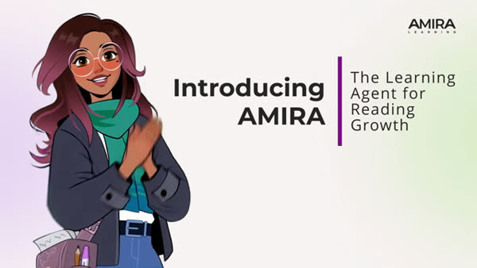
第一個決定就很重了：Amira 不是一個工具的名字，是一個角色 整支影片用第一人稱「我」講話——「我聽過 110 億個字」「我是雙語的」 把 AI 擬人化成一個學生會認的角色，這是產品設計選擇，不是行銷包裝 我們的平台目前沒有這一層
My story began at Carnegie Mellon University, where leading AI and reading scientists spent decades advancing research that became my foundation.
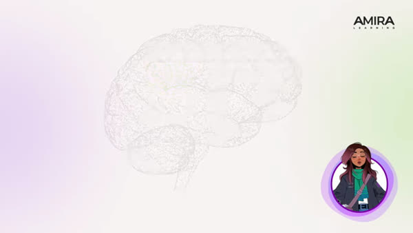
第二張畫面就搬出 CMU 和「數十年研究」 順序有意思——先角色、再血統、才講功能 它賣的第一件事是可信度不是功能
I've listened to over 11 billion words read aloud.
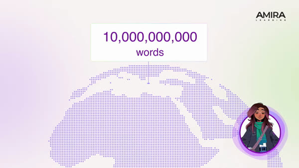
旁白說 11 billion，畫面寫 10,000,000,000（100 億） 這是這支影片裡第一個自己對不上的數字
數字對不上旁白 110 億 vs 畫面 100 億
I can uniquely analyze their speech down to the phone level.
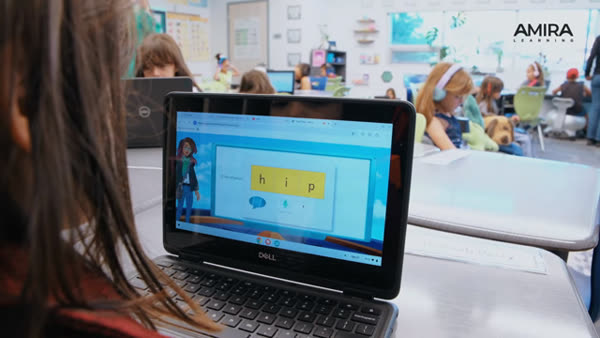
這格最有價值 —— 沒有帳號的話我看不到 Amira 的真實介面，而它自己的影片拍出來了 學生端長這樣：左邊角色、中間拼讀磚 這是徹底的解碼優先（decoding-first）介面，配合旁白的「down to the phone level」（音素層級分析）完全一致
而這正是中文搬不過來的那一層：英文可以把 hip 拆成 /h/ /ɪ/ /p/ 三塊磚讓學生重組，中文沒有這個拆法 它最深的護城河剛好是中文最沒有的維度
Universities, state agencies, ministries of education, and prominent research firms are continuously testing and validating my efficacy.
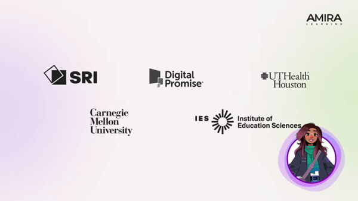
IES 是美國聯邦教育部底下的研究機構 這排 logo 的作用不是學術背書，是採購背書——學區要用聯邦經費買，就需要看到這些名字
As a learning agent, my superpower is being able to listen, assess, and tutor in real time.
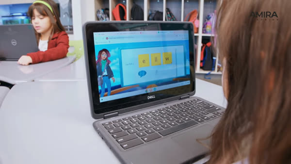
第二次拍到同一種介面，佐證前一格不是特例 注意這裡說 real time（即時），但 128 秒處又說 closed loop（預先生成）——兩者並不矛盾：聽是即時的，回應是從審過的池子裡即時挑的
I help both teachers and students in the classroom by connecting assessment, instruction, and tutoring into one coherent instructional experience.
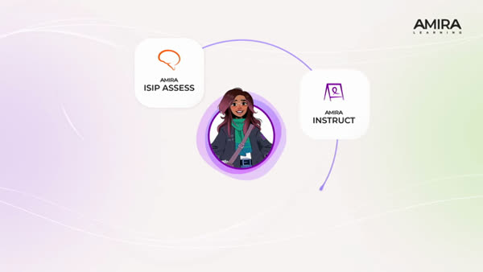
這張圖就是它的商業模型 三個產品（評測 / 教學 / 家教）被畫成一個閉環，賣的是「連起來」而不是三個工具
對我們最刺的一點：這個閉環的中間值是跨課掌握度——它知道每個學生現在的技能狀態，所以評測能餵教學 我們是一堂課一份報告，課跟課之間沒有接起來
I'm also bilingual. I speak fluently in English and Spanish. I love being in dual language classrooms.
（這段是課堂 b-roll，沒有產品畫面）
沒有畫面但這句話很關鍵：它自己說只有英文和西文 我先前一版研究寫「已在 20 國 18 語言」，來源是一則二手摘要——被它自己的影片和官方產品頁同時否證 它連第三個拼音語言都還沒做，跨到漢字的距離比我原本判斷的遠得多
I'm so proud to be trusted by thousands of partner districts.
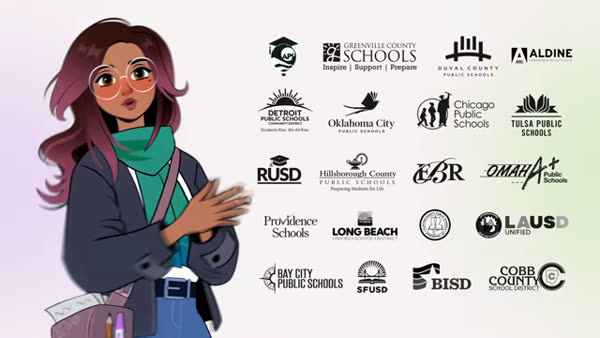
LAUSD 和芝加哥都在上面——這是美國第二、第四大學區 這面牆的意義是：它已經過了「找早期客戶」階段，在打規模化採購
Amira steps in and does a phenomenal job with lifting that load and helping our teachers get scholars to where they need to be. […] the time that it could save in the classroom.
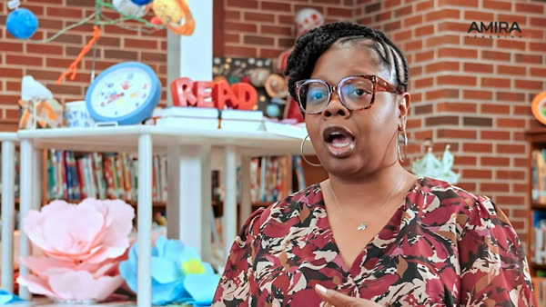
整支影片唯一的真人證言，講的不是「學生變厲害」，是「幫老師卸掉負擔、省下時間」 這是它敘事的軸心，也是我們該學的地方——不過我們的形態不一樣（見文末）
I'm also approved by state agencies nationwide and I represent the highest standards of privacy, security, and responsible AI. Districts trust my closed loop system.
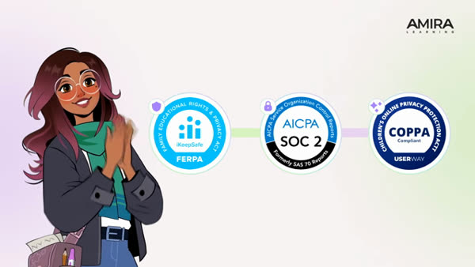
這格解掉了我一個誤解 我原本把 closed loop（Claude 離線預生成回應、人工審過、runtime 只從池中挑）當成一個工程妥協 但它在影片裡出現的位置是緊貼著 FERPA / SOC 2 / COPPA 徽章，句子是「Districts trust my closed loop system」
也就是說：預生成不是為了省成本，是當隱私與可控性的賣點在賣給學區 這改變了我們要不要跟進的算法——它不只降 QA 成本，還是一個可以對外講的合規論述
Independent published research shows that students who work with Amira at the recommended dosage of 30 minutes per week grow about 68% faster than peers using other reading technologies.
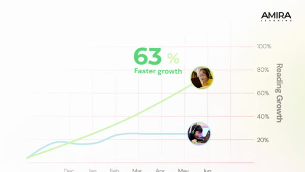
兩件事
一、劑量：每週 30 分鐘 它把使用量寫成處方，效果宣稱綁在這個劑量上 我們從來沒定義過「一週該練多久」
二、旁白說 68%，同一格畫面的圖表寫 63% 加上官網的 68% 和 Anthropic 案例的 70%——同一個成效指標,四個地方四個數字
數字對不上旁白 68% vs 畫面 63% vs 官網 68% vs Anthropic 案例 70%
它整支影片的敘事軸是幫老師卸負擔，唯一的真人證言講的是省時間，不是學生變厲害這個錨點我們該學
但形態不一樣Amira 給老師的是工具——老師自己 20 分鐘掃全班，可以規模化我們現在給老師的是服務——老師交檔、我們代跑，因為教授明確要求不學新工具服務換到的是信任和內容，工具換到的是規模什麼時候、用什麼條件從服務切到工具，這才是真正要決定的事
驗證邊界：本頁所有畫面來自 Amira 官方介紹影片，屬廠商自製素材（不是我實機操作 Amira 產品）字幕是 YouTube 自動生成，人名與專有名詞可能有辨識誤差（影片把 Amira 念成 "Amamira"、"Mirror" 等）；引用的句子我已對照畫面確認語意畫格僅為研究評述用途